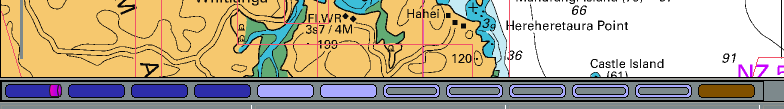
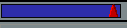
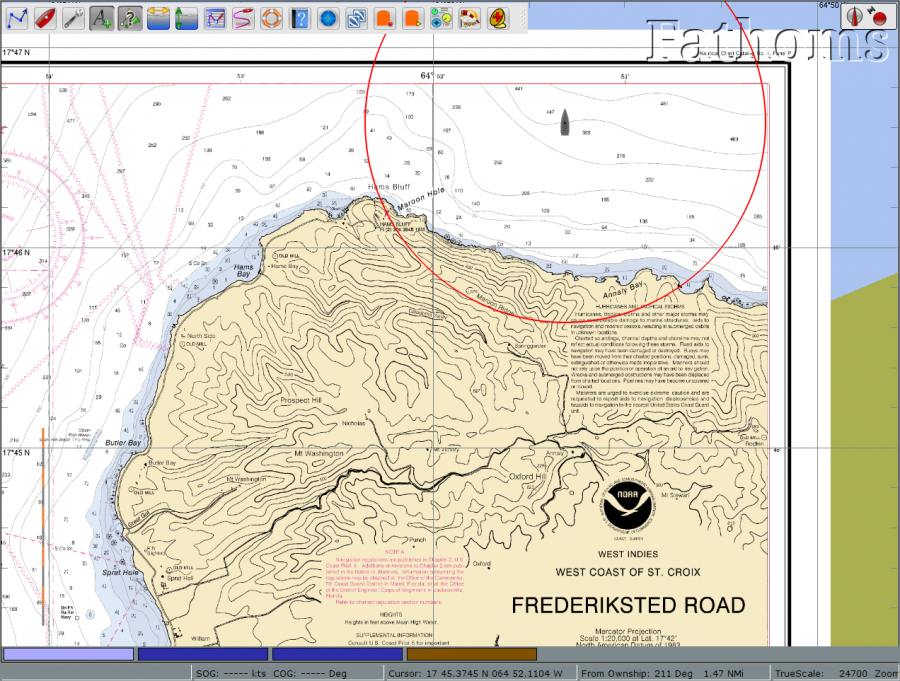

Status Leiste
Unten sind die Status-Leisten, zu aktivieren oder deaktivieren mit 'Einstellungen/Statusleiste anzeigen'.
Die obere Zeile, 'Karten Auswahl-Leiste', hat folgende Bedeutung.
Sie zeigt alle verfügbaren Karten der aktuellen Ansicht mit einem Segment je Karte. Die Reihenfolge der Segmente steht für die Skalierung der Karten, der größste Maßstab links, der kleinste Maßstab rechts. Ist CM93 verfügbar, dann ist es immer am weitesten rechts. Die Farben der Balken in der Statusleiste bedeuten:

Beschränkung
Die Kartenleiste kann mit maximal 100 Karten umgehen. Die Karten mit dem höchsten Maßstab werden verworfen, wenn an einer Position mehr als 100 Karten verfügbar sind. Dieser Fall wird zwar kaum eintreten, kann aber sein, wenn viele Info-Karten, Pilot Karten, Wetterkarten usw. geladen werden. Dann können die Karten mit großem Maßstab nicht mehr angezeigt werden.
Wenn der Mauszeiger über die Leiste bewegt wird und man ist nicht im "Quilting" Modus, wird eine Miniatur-Karte unter den SKALIERUNG EIN/AUS Symbolen gezeigt und eine Box mit Karten-Informationen erscheint über dem Balken. Ist "Quilting" an, wird die zum Balken gehörige Karte anstatt in Miniatur-Form markiert in einer transparenten rötlichen Farbe. Mit Klick auf den entsprechenden Balken oder Verwendung der entsprechenden HOT KEYS wird zur Karte in der Miniatur-Ansicht gewechselt. Das ist besonders nützlich, wenn eine ENC Karte oder eine Raster Karte im gleichen Gebiet angesehen werden soll.

Die untere Zeile enthält (von links nach rechts) die GPS Position, die OpenCPN zugeführt wurde (Ihr Boot), Geschwindigkeit über Grund (SOG), Kurs über Grund (COG), Cursor (Position Breite/Länge, in Grad vom Boot und in Entfernung vom Boot) sowie Maßstab und Zoom-Faktor. Fehlt der Zoom-Faktor ganz rechts, dann ist der "Quilting" Modus aktiviert.
Die Knöpfe enthalten jedoch noch weitere Informationen.
Diese Knöpfe zeigen, daß zwei Karten Transverse Mercator sind.
 Dieser Knopf bedeutet, die Karte ist eine Poly Conic Karte.
Dieser Knopf bedeutet, die Karte ist verzogen und nicht genordet.
 Diese Karte ist ausgeschlossen vom "Quilting" wegen Anwender Aktion.
Diese Karte ist ausgeschlossen vom "Quilting" wegen Anwender Aktion.
Rechts-Klick zur Wiedereinbindung in "Quilting".
Die von diesem Knopf repräsentierte Karte nimmt nicht am "Quilting" teil, weil sie von einer anderen Karte mit größerem Maßstab versteckt ist. Vektor Karten werden ähnlich dargestellt.
Zur Illustration einiger Dinge ist hier ein Bildschirmfoto im "Quilting" Modus.

Dieser Bildschirm zeigt zwei Polyconical Karten. Bewegen des Mauszeigers über den linken Karten-Knopf markiert die Karte im großen Maßstab für Manitowoc.
Zwei Karten im kleineren Maßstab in diesem angezeigten Bereich des Bildschirms sind im "Quilting" enthalten, aber sind unsichtbar, da verdeckt von den Karten im großen
Maßstab. Um diese Karten zu sehen, klicke rechts irgendwo auf eine Karte im "Quilt" und wähle "Karte aus dem Patchwork (Quilting) entfernen". Eine dieser Karten wird
dann im "Quilting" gezeigt.
Der braune ganz rechte Button zeigt, daß CM93 Version 2 Karten für dieses Gebiet verfügbar sind, aber aktuell nicht angezeigt werden.
Die Informations-Box zeigt relevante Informationen über die Karte. Wir sehen, daß es eine Polyconic Karte ist und daher eine Warnung über geringe Genauigkeit
gezeigt wird. Obwohl Polyconic Karten am "Quilting" teilnehmen dürfen, ist das Ergebnis nicht gänzlich frei von allerdings kleinen Fehlern.